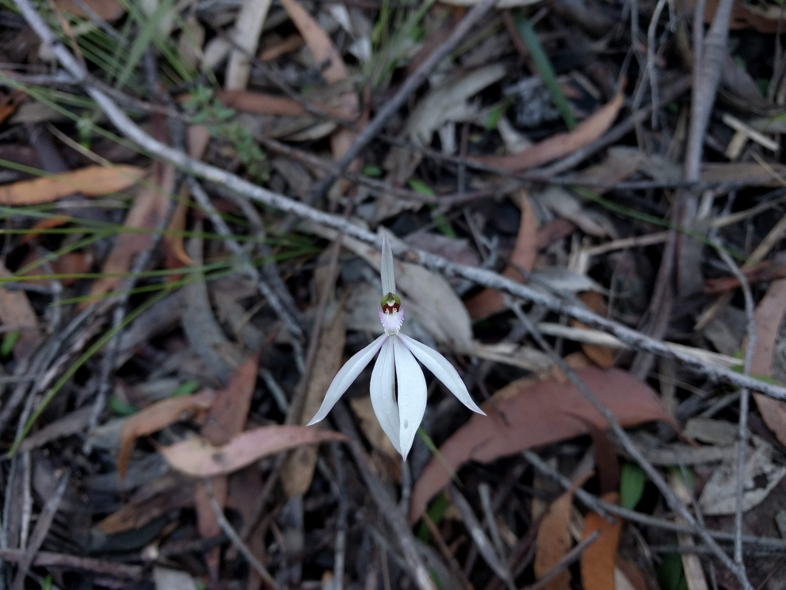

What is the real world? This is something I ponder sometimes when I'm choosing between getting on top of my email or watching the Eastern Spinebills forage in the Salvia out my window. I was sorting out and backing up all my old files recently and found this piece of writing from five years ago, musing again about this idea of the real world. I find it pretty soothing, so I'm sharing it here in the hope someone else finds it soothing too.
Wild Dogs, Blue Mountains
I am ensconced in layers- two woollen thermals, pockmarked with moth holes, an old shirt of my father’s, knitted gloves I picked up in Kathmandu and an alpaca beanie from the Buddhist shop in Newtown. So many layers, but I am still freezing. A steady breeze blows from the east, cutting across the top of Mt Dingo with a frostless, dewless, drier-than-bones cold. I turn my torch off, let my eyes adjust to the faint light from the crescent moon. The bush is all rustling shadows around me, the occasional trunks of scribbly gums glowing pale in the darkness. Katy gets chilblains so is already in her tent, having scarfed down soup heated on our metho stove. I’m better with cold so stay out a while longer, stretching my pinched muscles in the biting air, trying to glimpse the southern cross dancing in the wavering treetops. Soon I’m in my sleeping bag too though, listening to the wind running out to the valley and curling around my book. I haven’t been up this mountain in a while but the walk here today jogged my memory, clambering through sandstone outcrops and grey gums, greeting all the plants I now know by name. And of course the views: steep-buttressed eucalypt covered ridges and slopes and gullies, that hazy blue-green of distant forest, edged in by long lines of yellowy-sandstone cliffs.
The mid-mountains where I grew up were not quite as dramatic as all this, with gentler rises, nearer distances. As a child they were enough though. I used to sit on a sandstone outcrop, terrier snuffling in the undergrowth below me, and imagine myself in the shade under the trees across the gully. That opposite ridge seemed so tantalisingly close and yet another world away – away from my teenaged fights with my mother or my worries I wasn’t fitting in at school. Over there I could just be, under the cool green leaves in those mysterious shadows. Just, be.
This is something I’ve learned to do over the years, just being in the bush. Thanks to the dedicated teachers in my high school’s Duke of Edinburgh program, and to a university bushwalking club. To put myself elsewhere, to load my body down with tent and stove and water and let my mind release, letting go of assignment due dates or difficult housemates or the latest project at work. I turn my phone off and leave the ‘real’ world, let the rhythm of walking, the delight of spotting a red-browed finch or yellow robin through the undergrowth drive the worries of the day from my mind. Out here in the bush everything feels far away, everything less urgent or important. Sydney is reduced to a dim glow on the horizon at night, and all the stars come out to put it in perspective.
To put me in perspective too. I love how small the bush makes me feel, treading through landscapes that have evolved over millions of years and seen thousands of generations of humans before me. Seeing how water has cut its way down through creeks and canyons over the past million years to give the mountains their shape. Feeling the smooth bark of gum trees as I pass them, eucalypts that have adapted in so many ingenious ways to the poor, sandy soils, the fierce and frequent fires. And noticing the grasses, herbs and shrubs that change as the tree species change, as I get higher up on a ridge or lower down in a gully. These communities of plants that form unique habitats for night-roaming marsupials, for bees or birds or bats that have come to depend on them for food and shelter over millennia of co-existence. I try to leave barely a ripple on the surface of all this. Apart from the wagtails that come to check me out, eating the insects stirred up by my passage, my presence barely registers.
Despite the mountain’s name we hear no dingoes in the night, just the howls of wind scouring the rest of the Wild Dog mountains. In the morning the sun glows red on the horizon. I find a treasure when I stumble out of my tent to pee- a delicate pink and white fairy orchid, Caladenia picta, poking up out of the leaf litter. We pack up and walk down the short track to a lookout bushwalkers call Splendour Rock. A lyrebird call echoes up from the creek way below, splicing other birds’ songs together with his own mechanical tune. The bush is spread out before us, wave after wave of mountain ridges wound through with creeks and rivers. This is the real world, I think. This is home.
